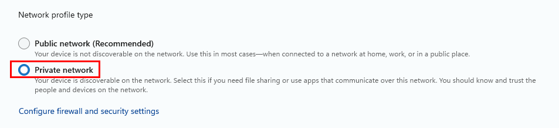
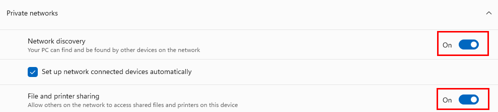
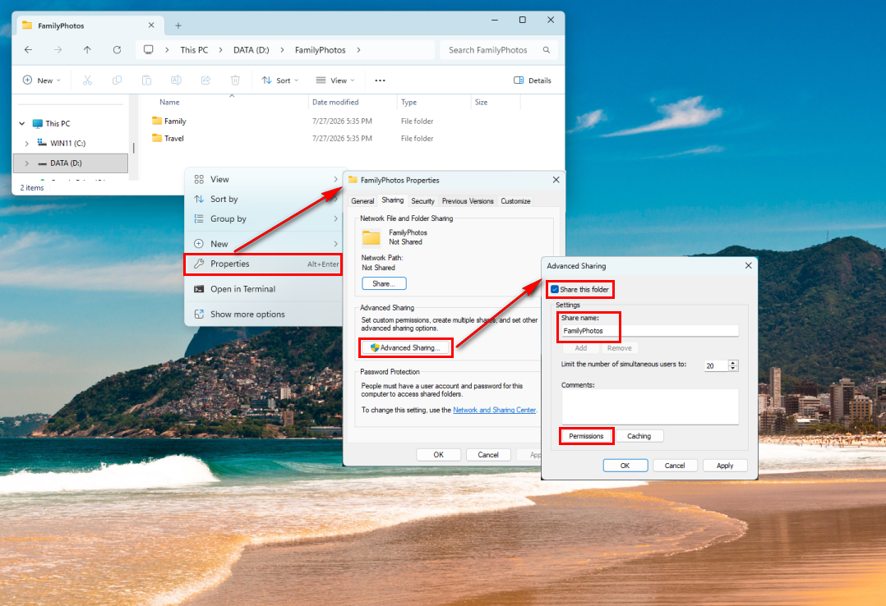
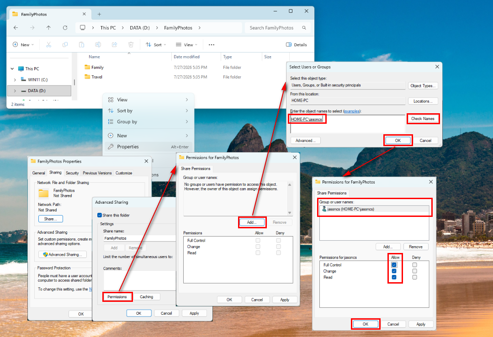
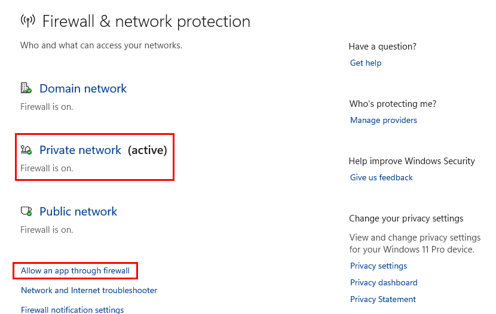
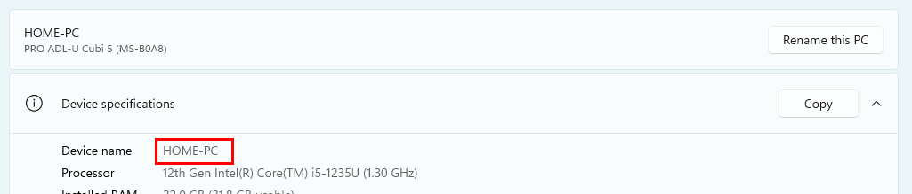
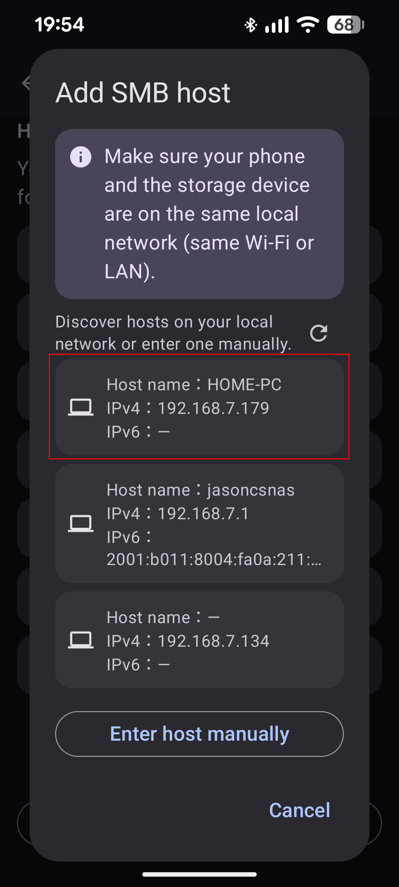
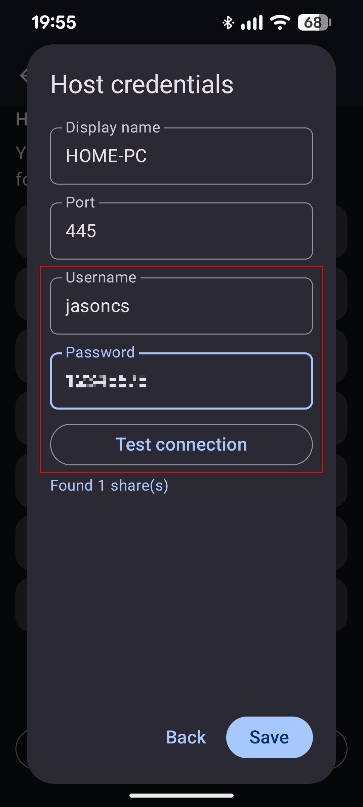
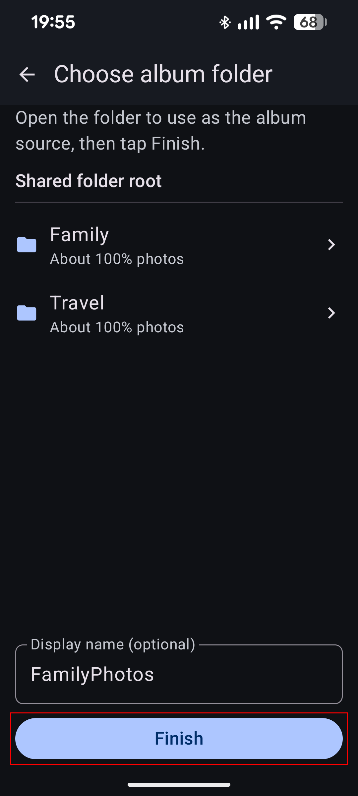

Share a folder on Windows 11
Before you start
- PC runs Windows 11 on your home network
- Phone and PC on the same home Wi‑Fi (not mobile data / guest Wi‑Fi)
- You know your Windows username and password (set a password under Settings → Accounts → Sign-in options if you only use PIN)
- Create a dedicated folder first, e.g.
D:\FamilyPhotos(do not share the whole system drive)
Step 1: Set the network to Private
On a Public network, Windows often blocks file sharing.
- Open Settings → Network & internet
- Open Wi‑Fi (or Ethernet) → your connection
- Under Network profile type, choose Private

Step 2: Turn on File and printer sharing
- Settings → Network & internet → Advanced network settings
- Open Advanced sharing settings
- Under Private: turn on Network discovery and File and printer sharing
- Under All networks: turn on Password protected sharing (recommended); do not rely on Guest

Step 3: Share the folder
- Create e.g.
D:\FamilyPhotosand put photos/videos there - Right-click the folder → Properties → Sharing
- Advanced Sharing… → check Share this folder
- Note the Share name → Permissions

Step 4: Who can read / write
- Remove Everyone if present (recommended)
- Add… your Windows username → Check Names → OK
- Grant that user Read and Change (read/write). Upload, move/copy, saving edits, and album backup all need write access; Read alone often causes failures later. Use Read only if the phone will never write.
- Apply → OK

Do not share all of C:\ or your entire user profile as writable.
Step 5: Firewall
Usually fine after enabling File and printer sharing. If the app never finds the PC:
- Settings → Privacy & security → Windows Security → Firewall & network protection
- Allow an app through firewall
- Ensure File and Printer Sharing is allowed on Private (SMB-related; look for SMB-In in advanced rules)

Step 6: Note the name and credentials
- Find Device name: search Settings for About; or Settings → System → scroll to About; or
Win+R→sysdm.cpl - Username: local account name, or sometimes
MicrosoftAccount\you@email.com - Password: Windows sign-in password (not the PIN)

Step 7: Connect in Home Gallery
- Phone on the same home Wi‑Fi
- Home → Connect home storage (or More → Settings → Host connections → Add SMB host)
- Pick your PC from the scan (or enter IP)

- Enter username/password → Test connection → Save

- Choose the shared folder → album folder → Finish

Done checklist
- Network profile is Private
- Discovery + File and printer sharing On for Private
- Folder shared; account has Read + Change (read/write)
- Same Wi‑Fi; app opens the folder
If it fails: Troubleshooting. Also: Synology · QNAP.